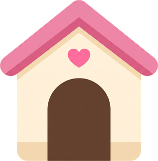
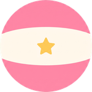
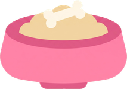

すきな いぬを えらんでね。
なんびきでも そだてられて、レベルは いぬごとに たまるよ。
おさんぽから かえると、いぬが 1こ ひろってきて くれるよ。
ぜんもん せいかいなら もう 1こ！
コースごとに でる ものが ちがうので、いろんな コースに いってみよう。
アイテムは いぬ 1ぴきごとに もらえるよ。
レベルが とどくと じどうで もらえます。
✎なまえは あとから
いつでも かえられるよ。
ぜんぶの いぬと、なまえ・レベル・なつき度が
きえて さいしょから に なります。
もとには もどせません。



あつめた ♥ が そのまま なつき度に なるよ。
まいにち おさんぽして ♥ を ためよう！
※ にがてな もんだいは よく でてくるよ
いぬが どこかへ いって しまった…
♥が たりなく なって しまったよ。
でも だいじょうぶ。よんだら もどって きてくれる！